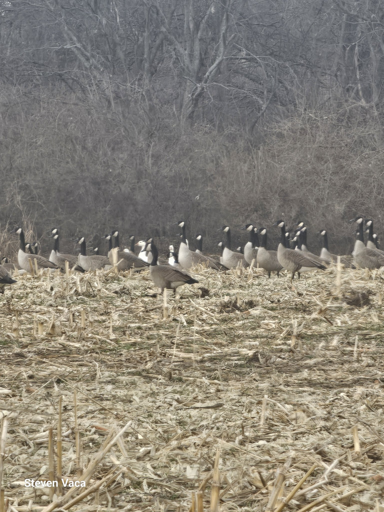
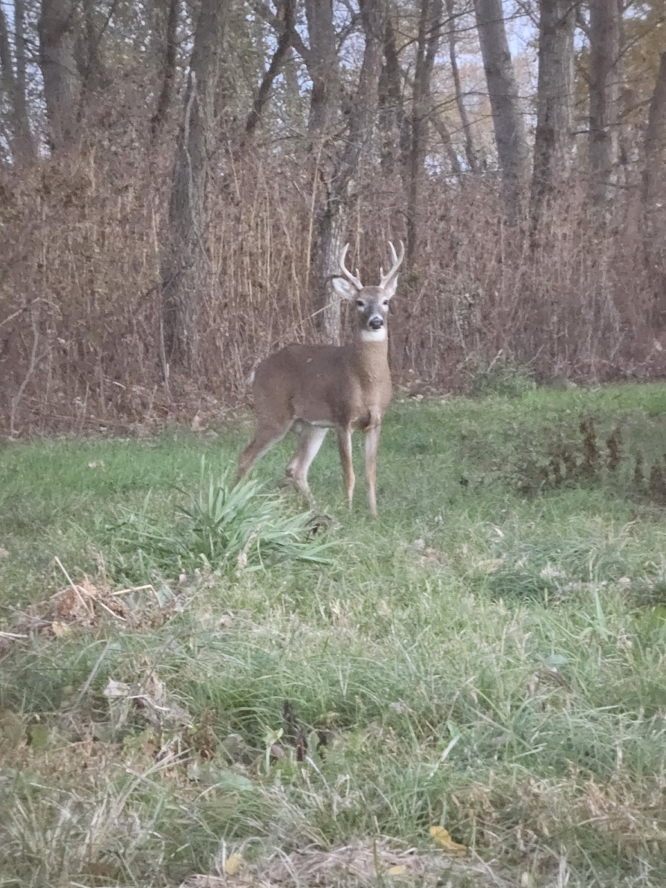

Our hunts
Guided hunts on private leased ground in Missouri, Kansas, and Iowa. Small groups, honest scouting, and setups built for hunters of all abilities.
Waterfowl
Duck and goose hunts over managed spreads — layout blinds, A-frames, and pit setups matched to the field and the birds. Late-season mallards and full-plumage honkers are the headliners.

Turkey
Spring gobbler hunts on roosted birds across our Cass County ground and beyond. Run-and-gun or sit-and-call — your hunt, your pace.
Archery deer
Archery-only whitetail hunts from stands and ground blinds placed on travel corridors, pinch points, and food sources. Rut hunts go fast — book early.

Dove
Early-season dove fields with managed sunflower and wheat. High-volume shooting and an ideal first guided hunt.
Rates & availability
Rates vary by species, season, and group size. Contact us for current pricing and open dates.